Imagem: Z-Man Games (partida em andamento)Colocação de peças · Família
Como jogar Carcassonne
Para quem nunca jogou2 a 5 jogadores35 min7+Edição Devir
· Redação Elite Boardgamers
Resumo em 1 minuto
Você coloca uma cartela de terreno por turno, põe seguidores em estradas, cidades, monastérios e campos, e vence quem tiver mais pontos quando as cartelas acabarem.
No seu turno, você coloca uma cartela continuando o terreno e pode pôr um seguidor nela, numa zona que ainda não tenha seguidor.
Estrada concluída vale 1 ponto por cartela; cidade concluída, 2 por cartela e 2 por brasão; monastério cercado, 9. O seguidor volta para a reserva.
Quando as cartelas acabam, o que ficou pela metade ainda pontua (a cidade vale a metade), e os fazendeiros ganham 3 por cidade concluída no seu campo.
Como você aprende: 3 etapas, da mesa montada à contagem de pontosLeitura do essencial: cerca de 7 min
À vista, só o essencial para jogar. O que abre com + é explicação, exemplo, exercício ou regra de caso especial: abra quando precisar.
Montar a mesa passo a passo
A montagem segue a seção "Componentes e preparação" do manual p. 2, na mesma ordem. É igual para 2, 3, 4 ou 5 jogadores; muda só quantas cores de seguidor ficam na mesa.
O que vem na caixa (p. 2; catálogo Devir de 2026):
Componente
Quantidade
Cartelas de terreno, contando a cartela inicial
72
Cartelas de rio (mini-expansão O Rio, verso mais escuro)
12
Seguidores de madeira: amarelo, vermelho, verde, azul e preto
40, 8 de cada cor
Abades de madeira (mini-expansão O Abade), um de cada cor
5
Marcador de pontos (o tabuleiro da trilha de pontos)
1
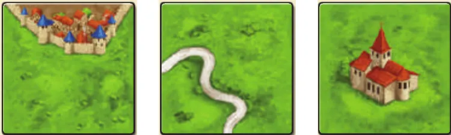
Cartelas de terreno: com pedaço de cidade (a parte murada), com estrada e com monastério no centro. Ilustração: manual Devir p. 2
Separe a cartela inicial e as 12 cartelas de rio, as únicas de verso mais escuro p. 2. As de rio são da mini-expansão O Rio, que substitui a cartela inicial pela do Manancial (suplemento, p. 2); o manual não diz o que fazer com elas no jogo base, e este guia as deixa na caixa.
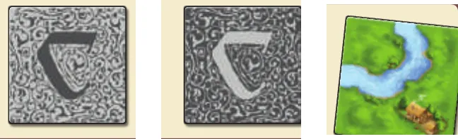
O verso normal, o verso mais escuro (cartela inicial e rio) e uma cartela de rio vista de frente. Ilustração: manual Devir p. 2
Ponha a cartela inicial no centro da mesa, virada para cimap. 2. Na figura do manual, ela mostra um pedaço de cidade murada numa borda e uma estrada que atravessa a cartela de um lado ao outro, com campo dos dois lados da estrada. É dela que o terreno vai crescer.
Misture as outras 71 cartelas de terreno, viradas para baixo, e faça vários montes em volta da mesa, de modo que todos alcancem um monte com facilidade p. 2.
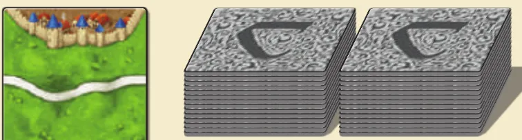
A cartela inicial, virada para cima, e dois montes de cartelas viradas para baixo. Ilustração: manual Devir p. 2
Coloque o marcador de pontos num canto da mesap. 2.
Cada jogador escolhe uma cor e pega as 8 figuras dela. Sete ficam à frente do jogador: são a sua reserva, os seguidores que ele vai pôr no terreno p. 2.
A oitava figura de cada cor vai para o espaço 0 do marcador de pontos. Ela só marca os pontos do dono p. 2.
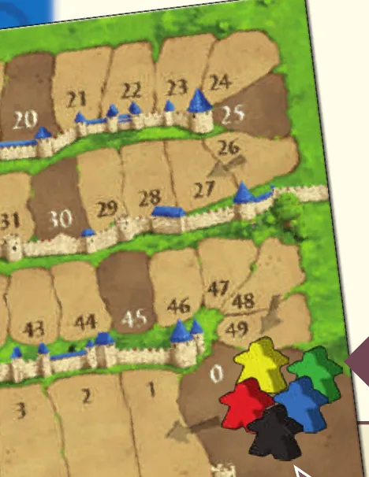
O marcador de pontos, com uma figura de cada cor no espaço 0. Ilustração: manual Devir p. 2
Devolva à caixa as figuras das cores que ninguém escolheu e os 5 abadesp. 2; os abades, "nas primeiras partidas".
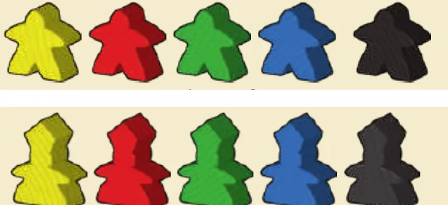
Em cima, os seguidores das cinco cores; embaixo, os abades. Ilustração: manual Devir p. 2
Decidam se jogam com fazendeiros. O manual sugere deixá-los de fora nas primeiras partidas e usá-los depois de algumas p. 6. Eles são explicados na etapa 3.
Defina quem começa. O jogador mais jovem começa, e a vez segue no sentido horário p. 3.
O que muda com o número de jogadoresp. 2:
Jogadores
Seguidores em jogo (na reserva)
Figuras no marcador
Figuras que voltam à caixa
2
14 (7 de cada)
2
24 seguidores e os 5 abades
3
21
3
16 seguidores e os 5 abades
4
28
4
8 seguidores e os 5 abades
5
35
5
nenhum seguidor; os 5 abades
Nada mais muda, e ninguém recebe cartela antes de começar p. 2 e 3.
Antes de começar, confira: cartela inicial no centro; cartelas de rio e abades na caixa; as outras cartelas em montes, viradas para baixo; marcador de pontos no canto, com uma figura de cada jogador no 0; 7 seguidores na reserva de cada um; combinado se há fazendeiros; quem começa definido.
Partida de 3 jogadores. Quantos seguidores cada um tem na reserva, e quantas figuras voltam para a caixa?
Cada um fica com 7 na reserva e põe a oitava figura no 0 do marcador. As duas cores que sobraram (16 figuras) e os abades voltam para a caixa p. 2.
Comece a jogar em 4 minutos
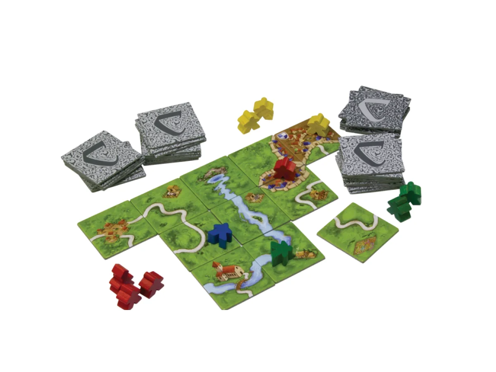
Imagem: Z-Man Games
Meta: em 4 minutos de leitura, montar a mesa e jogar o seu primeiro turno sem abrir o manual.
A ideia do jogo
Juntos, os jogadores montam o mapa da região em volta da cidade de Carcassonne, uma cartela de terreno por turno. Cada cartela continua as estradas, as cidades e os campos que já estão na mesa. Quem põe um seguidor numa estrada, numa cidade ou num monastério ganha pontos quando essa construção fica concluída. Vence quem tiver mais pontos depois que a última cartela for colocada.
Monte a mesa
A montagem completa, com figuras, está na seção "Montar a mesa passo a passo", logo acima. O essencial p. 2 e 3:
Cartela inicial no centro; as outras, viradas para baixo, em montes. Cartelas de rio e abades ficam na caixa.
Marcador de pontos no canto, com uma figura de cada jogador no 0.
Cada jogador fica com 7 seguidores da sua cor.
O mais jovem começa; a vez segue no sentido horário.
Seu primeiro turno
O turno tem três passos, sempre nesta ordem p. 3:
Passo
O que você faz
1. Colocar uma cartela
Obrigatório. Pegue uma de um monte e encoste-a em outra, continuando o desenho: estrada com estrada, cidade com cidade, campo com campo
2. Colocar um seguidor
Opcional. Ponha um seguidor da reserva na cartela que você acabou de colocar, numa estrada, cidade, monastério ou campo que ainda não tenha seguidor
3. Contar pontos
Obrigatório. Toda estrada, cidade ou monastério com seguidor que a sua cartela concluiu pontua agora
O seguidor muda de nome conforme o lugar: na estrada é ladrão, na cidade é cavaleiro, no monastério é mongep. 3 e 4. O seguidor deitado no campo (fazendeiro) fica para a etapa 3.
Ainda não precisa saber
Quanto vale cada construção concluída e como se divide uma cidade com dois cavaleiros: etapa 2. O que acontece no fim com o que ficou pela metade, e os fazendeiros: etapa 3. Abra a etapa quando chegar a hora.
Como a partida acaba
A partida termina quando não houver mais cartela para pegar e colocar. Aí se contam os pontos das construções que ficaram sem concluir e dos campos, e vence quem tiver mais pontos no marcador p. 6.
Prefere ver? As regras em vídeo, pelo canal da Devir, a editora brasileira. Ele complementa este guia; em caso de diferença, vale o manual.
DEVIR BRASIL I Carcassonne - regras rápidas, canal Devir TV Brasil · abrir no YouTube
0Antes de tudo: o que é este jogoOpcional
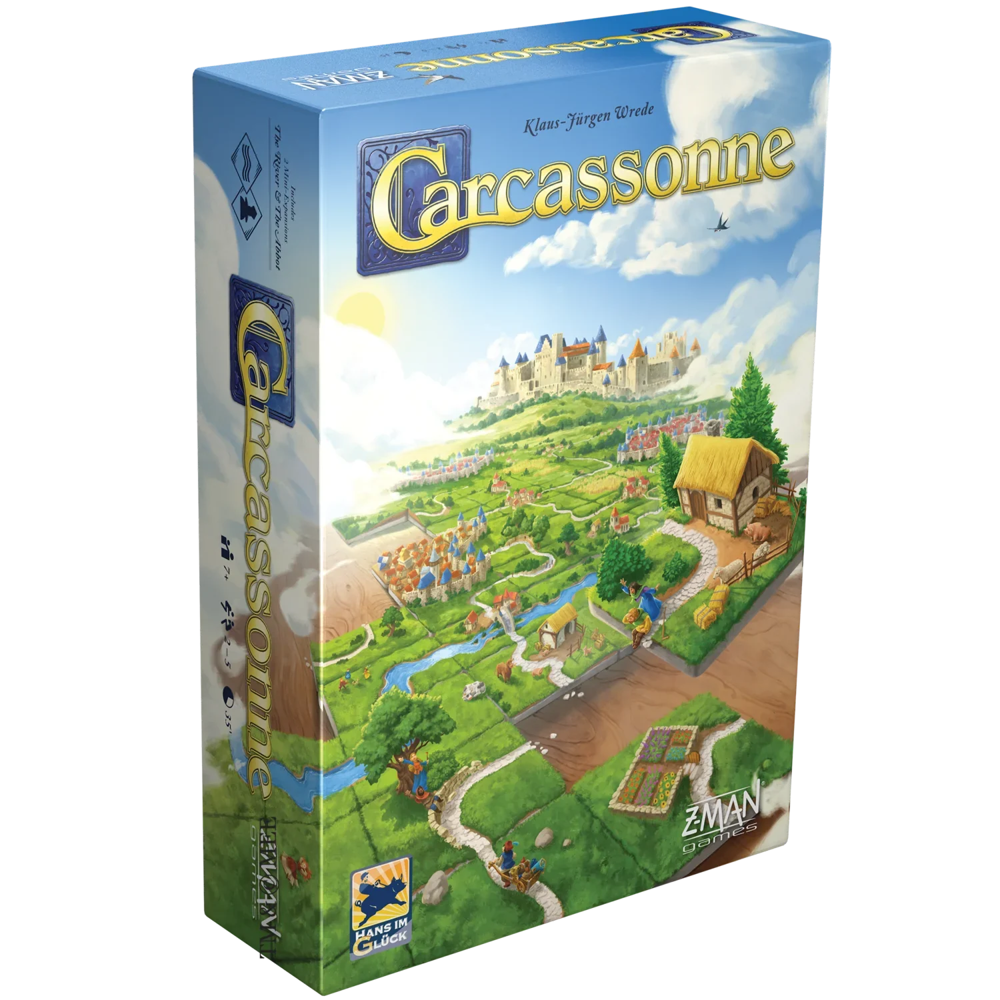
Imagem: Z-Man GamesAbrir esta seção
Carcassonne é um jogo de montar um mapa. Não há tabuleiro: o terreno nasce da cartela inicial e cresce uma cartela por turno. Cada cartela tem pedaços de estrada, cidade, campo ou monastério e precisa encaixar no que já está na mesa p. 2 e 3.
O seguidor reivindica a construção inteira, não só a cartela em que está, e ela dá pontos a quem tiver seguidor nela quando fica concluída, mesmo que outro jogador a tenha fechado p. 3.
Se uma construção tiver seguidores de mais de um jogador, ela pontua para quem tiver mais seguidores nela p. 5.
Duas ideias sustentam o resto:
Os seguidores são poucos e voltam. Cada um tem 7, e o seguidor só volta para a reserva quando a construção dele é pontuada p. 2 e 4.
Todos constroem o mesmo mapa. A cartela que você coloca pode completar a cidade de outro jogador, ou encostar uma cidade sua na dele. Dá para ajudar, atrapalhar e até tomar uma cidade alheia p. 5 e 6.
1Como este guia ensinaOpcional
Imagem: Z-Man GamesAbrir esta seção
Três etapas: colocar a cartela e o seguidor, pontuar durante o jogo, fechar a partida com a contagem final e os fazendeiros. Cada etapa traz Para entender (o porquê), Passo a passo (a regra exata), casos especiais a um toque e tarefas com ajuda que diminui: exemplo resolvido, complete e sua vez. Toque numa opção para ver a resposta e a explicação. No fim, uma avaliação diz o que reler, e uma folha de consulta vai para a mesa.
2Etapa 1: colocar a cartela e o seguidor
Por que funciona assim
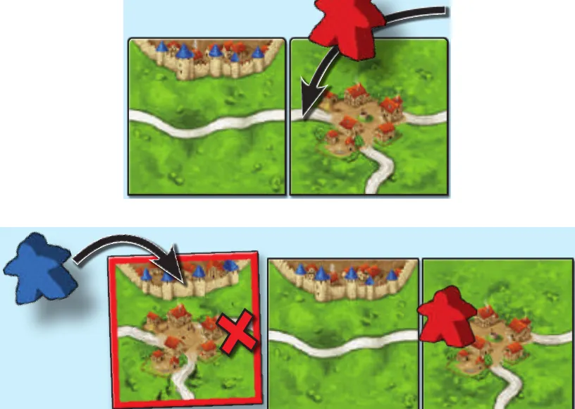
Em cima, a cartela nova (à direita) continua a estrada, e o vermelho põe nela um ladrão. Embaixo, o azul coloca a cartela de borda vermelha: a estrada à direita do cruzamento já tem o ladrão vermelho (o X), e o azul põe o seguidor como cavaleiro na cidade. Ilustração: manual Devir p. 3Regra adicional: Cartela que não cabeRegra adicional: Reserva vaziaVer um exemplo resolvidoPratique esta etapa: exercícios com respostas
3Etapa 2: pontuar durante a partida
Por que funciona assim
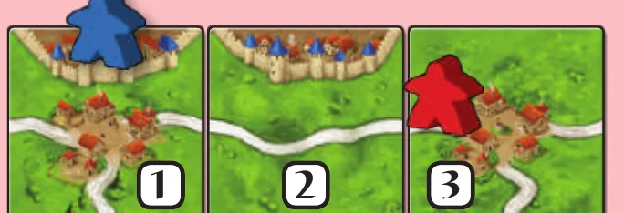
Uma estrada entre dois cruzamentos passa por 3 cartelas: concluída, dá 3 pontos ao ladrão vermelho; o cavaleiro azul, na cidade, fica no terreno. Ilustração: manual Devir p. 3
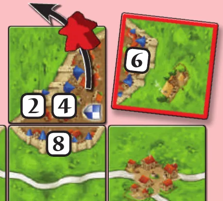
A cartela de borda vermelha fecha a cidade. Os números contam 2 por cartela e 2 pelo brasão: 3 cartelas e 1 brasão, 8 pontos para o cavaleiro vermelho, que volta para a reserva. Ilustração: manual Devir p. 4
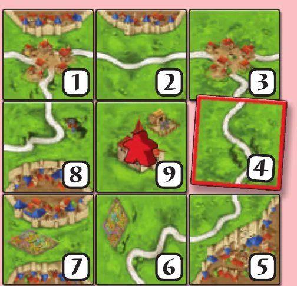
A cartela 4 completa as 8 cartelas em volta do monastério: o monge vermelho recebe 9 pontos e volta para a reserva. Ilustração: manual Devir p. 5Regra adicional: Seguidor que pontua no mesmo turnoRegra adicional: Estrada que acaba em outro desenhoRegra adicional: Volta no marcadorRegra adicional: Zona com dois donos
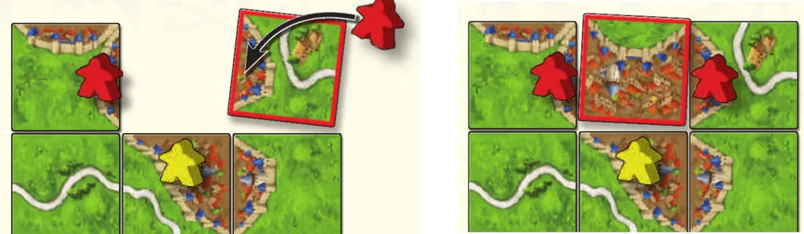
À esquerda, o vermelho põe um cavaleiro num pedaço de cidade separado da cidade do amarelo. À direita, uma cartela une e conclui a cidade: com 2 cavaleiros contra 1, só o vermelho ganha os 10 pontos. Ilustração: manual Devir p. 6Ver um exemplo resolvidoPratique esta etapa: exercícios com respostas
4Etapa 3: fim da partida e fazendeiros
Por que funciona assim
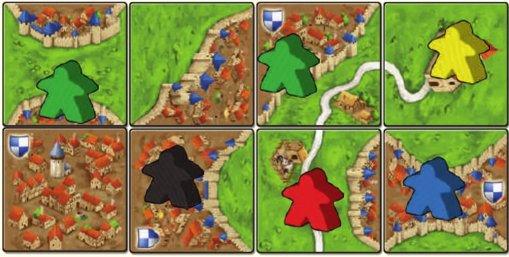
Contagem final do manual: o verde, com 2 cavaleiros contra 1 do preto, leva 8 pela cidade sem concluir (5 cartelas e 3 brasões); o amarelo, 4 pelo monastério com 3 vizinhas; o azul, 3 pela cidade de 2 cartelas e 1 brasão; o vermelho, 3 pela estrada de 3 cartelas. Ilustração: manual Devir p. 6
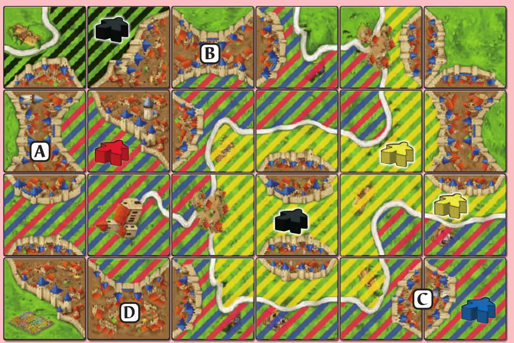
Os campos listrados têm as cores dos fazendeiros. No campo maior, vermelho e azul empatam e levam 9 cada pelas cidades concluídas A, B e C (a D não está concluída). O amarelo, com mais fazendeiros que o preto no outro campo, leva 12 por 4 cidades. No canto, o preto leva 6 por A e B. Ilustração: manual Devir (suplemento, p. 1)Regra adicional: Campos que se unemRegra adicional: Cidade que encosta em dois camposVer um exemplo resolvidoPratique esta etapa: exercícios com respostas
5Situações especiaisOpcional
Imagem: Z-Man GamesAbrir esta seçãoSobre a edição: O Rio e o Abade estão na caixaSobre a edição: Jardins e casinhasSobre a edição: EdiçõesSobre a edição: Empate no fimDica
6Avaliação finalOpcional
Imagem: Z-Man GamesAbrir esta seção
Responda sem consultar. Cada resposta diz o que reler.
1. Você colocou uma cartela e quer pôr um seguidor. Onde ele pode ir?
Só na cartela nova, numa zona sem seguidorp. 3 e 5. Releia a etapa 1.
2. Uma cidade concluída tem 3 cartelas e 2 brasões. Quanto vale?
10: 3 × 2 + 2 × 2 p. 4. Releia a etapa 2.
3. Uma estrada concluída tem 2 ladrões de Ana e 1 de Bruno. Quem pontua?
Só Ana, que tem mais seguidores; todos voltam à reserva p. 5. Releia a etapa 2.
4. Na contagem final, seu monastério tem 7 cartelas em volta. Quanto vale?
8: 1 da cartela dele e 7 das vizinhas p. 6. Releia a etapa 3.
5. Seu fazendeiro está num campo que encosta em 2 cidades concluídas e 2 sem concluir. Quanto ele vale na contagem final?
6: só as cidades concluídas contam, 3 cada (suplemento, p. 1). Releia a etapa 3.
7Para consultar durante a partida
Imagem: Z-Man Games
Preparação: cartela inicial no centro; combinem se há fazendeiros (o manual sugere deixá-los de fora nas primeiras partidas); o resto em montes virados para baixo (cartelas de rio e abades na caixa). Marcador de pontos com uma figura de cada jogador no 0. Cada um com 7 seguidores. Começa o mais jovem; sentido horário.
No seu turno:
Cartela (obrigatório): pegue de um monte e encoste em pelo menos um lado de outra, dando continuidade (estrada, cidade, campo). Não cabe em lugar nenhum: caixa, e pegue outra.
Seguidor (opcional): um só, da reserva, na cartela que acabou de colocar, numa zona sem seguidor: ladrão (estrada), cavaleiro (cidade), monge (monastério), fazendeiro deitado (campo).
Pontos (obrigatório): toda zona concluída pela cartela. Ganha quem tem mais seguidores nela; empate, todos levam tudo. Seguidores voltam para a reserva (fazendeiros não).
Concluída / quanto vale: estrada com os dois extremos fechados: 1 por cartela. Cidade toda murada: 2 por cartela e 2 por brasão. Monastério com 8 cartelas em volta: 9.
Fim (cartelas acabaram): estrada, 1 por cartela; cidade sem concluir, 1 por cartela e 1 por brasão; monastério, 1 mais 1 por vizinha; campo, 3 por cidade concluída que encosta nele. Mais pontos vence. Marcador: passou do 0, deite a figura (mais 50).